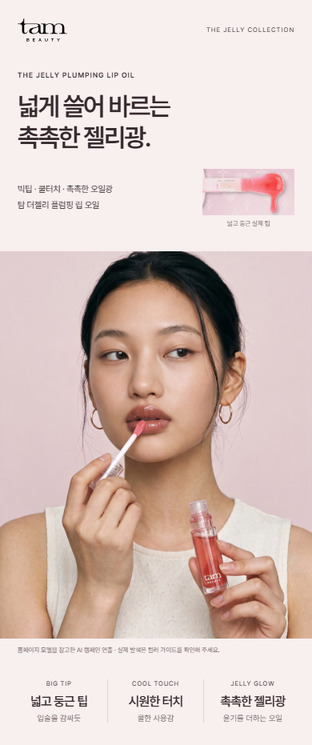
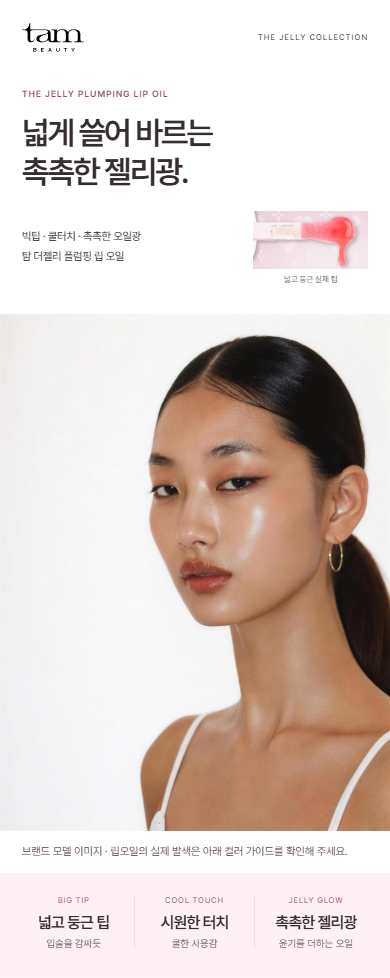
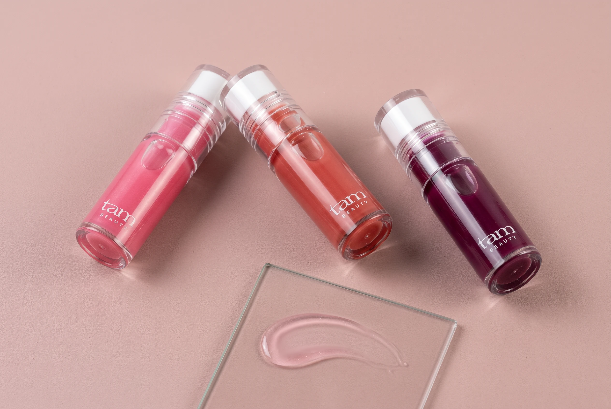

TAM LIP OIL / V5 · 2026.10.16
원본 얼굴로 돌아가고,
색은 더 맑게.
V4에서 얼굴이 달라지고 색감이 탁해졌다는 피드백을 반영한 수정본입니다. 연출컷의 구도와 제품 설명 흐름을 유지하면서 모델과 조명·배경 색을 바로잡았습니다.
새로 만든 얼굴을 빼고, 기존 원본 사용
홈페이지 영상 제작의 F1 홈스틸 원본을 그대로 사용했습니다. 원본 파일과 이번 에셋의 SHA-256이 일치합니다. 눈·코·입술과 피부색을 다시 생성하거나 수정하지 않았습니다.



모델은 브랜드 이미지로 사용했습니다. 해당 입술색을 이 립오일의 실제 발색으로 설명하지 않으며, 컬러 선택은 공식 발색 사진으로 안내합니다.
구도를 살리고, 탁한 배경색 제거


- 팁 확대: 회갈색 배경을 밝은 화이트·핑크로.
- 오일광: 회색 기운을 줄이고 투명한 핑크 광택으로.
- 제품 트리오: 구도를 유지하면서 탁한 피치·브라운 배경을 맑게.
- 페이지: 회색 면과 짙은 자주색 사용법 블록을 밝은 색으로 교체.
공식 제품·발색·전성분 자료는 유지했습니다. 이번 연출 편집은 실제 발색 보정이 아니며, 상세페이지에서도 AI 캠페인 연출로 표시했습니다.
검토 기록
이전 타 브랜드 3차 비교에서 정리한 팁 → 사용감·윤기 → 실제 컬러 → 사용법 흐름은 유지했습니다. 이번 수정은 얼굴과 색감에 집중했습니다. 이전 검토나 기술 검사를 사용자 승인으로 간주하지 않습니다.
이전 구성·타 브랜드 비교 기록 · 모바일·PC 기술 확인
이번 Claude 화면 교차검토 원문
검토 결과입니다. 승인 판단은 사용자 몫이며, 아래는 다섯 이미지를 직접 본 범위에서의 비판입니다. **모델 원본 복귀: 확인됨.** 캠페인 모바일 컷과 v5 프리뷰의 모델은 원본 홈스틸과 동일 인물입니다. 가르마 위치, 오른쪽 귀의 얇은 골드 후프, 왼쪽 어깨의 흰 끈, 광대 하이라이트, 입술 광택 위치가 모두 일치하고 크롭만 달라졌습니다. v4의 제품을 바르는 AI 얼굴은 사라졌습니다. **색감 개선: 의미 있음.** v4에서 탁했던 세 구역, 즉 히어로 배경, "어떻게 바를까요?" 섹션의 짙은 머브 블록, 트리오 컷 배경이 모두 화이트와 연핑크로 바뀌었습니다. 연출 구도는 v4와 같은 자리를 유지했습니다. 반영을 권하는 문제 3개입니다. 1. **입술이 제품 발색으로 읽힙니다.** 헤드라인 "넓게 쓸어 바르는 촉촉한 젤리광" 바로 아래에 글로시한 브라운레드 입술이 옵니다. 모델 입술색은 세 컬러 중 어느 것과도 정확히 같지 않고 인피니트 로즈에 가장 가까워 오인 여지가 큽니다. 면책 캡션 "브랜드 모델 이미지 · 립오일의 실제 발색은 아래 컬러 가이드를 확인해 주세요"는 있으나 작은 회색 글씨라 모바일에서 눈에 잘 띄지 않습니다. 사진은 그대로 두고, 캡션 크기와 대비를 올리거나 사진 좌상단에 "브랜드 모델 이미지" 라벨을 겹쳐 두는 편이 안전합니다. 2. **모델 패널만 톤 단차가 납니다.** 원본 사진의 따뜻한 크림색 배경이 순백 헤더와 연핑크 띠 사이에 끼면서 회베이지 사각형처럼 보입니다. 페이지에서 유일하게 덜 밝은 블록이라 "탁하다"는 인상이 여기서 다시 생길 수 있습니다. 사진 보정은 금지이므로, 해당 섹션의 배경색을 사진 배경 크림색에 맞춰 경계선을 없애는 레이아웃 조정만 권합니다. 피부 톤 변경은 제안하지 않습니다. 3. **연출 3컷 중 1컷만 원본 해상도로 확인했습니다.** trio-bright.webp는 밝은 연핑크 배경에 탁함이 없고 로고와 캡에 눈에 띄는 아티팩트도 없습니다. 반면 단일 보틀 컷과 스와치 컷은 860px 프리뷰로만 봤습니다. 썸네일에서는 탁한 마젠타가 사라진 것으로 보이지만 세부 톤은 검증하지 못했습니다. 승인 전에 두 컷의 원본 파일을 열어 확인하시기 바랍니다. 파일 수정, 쉘 실행, 다른 에이전트 호출은 하지 않았습니다.
비대화식 --no-session-persistence로 실행했습니다. 검토 의견은 자문이며 사용자 승인을 대신하지 않습니다.
Higgsfield 편집 프롬프트
기존 연출을 편집 대상으로 지정하고, 구도·제품 형태를 유지하며 조명과 배경색을 수정하도록 요청했습니다. 모델 원본에는 이미지 생성 도구를 적용하지 않았습니다.
1-tone-edit.txt
EDIT THE SUPPLIED EXISTING TAM PRODUCT PHOTOGRAPH. Preserve exact product bottle, printed logo, applicator shape and flocking, cap, white stem, scale, diagonal camera composition and positioning. Change ONLY lighting and backdrop color mood. The original image is too muddy, grey and brown. Make a clean bright luminous high-key cosmetic photograph: background near-white with a very faint fresh blossom pink tint, reflected white fill on clear packaging, brighter airy midtones, soft clean light pink shadows instead of taupe-grey shadow. Preserve rich natural rose liquid and product color differentiation, do not bleach liquid. Keep specular details and avoid white clipping. No new props, flowers, water, text, geometry or different bottle. The desired mood is fresh, clear, optimistic spring beauty on a white-pink studio sweep, not muted vintage dusty rose or beige luxury. Photoreal commercial product retouch, same image composition.
2-tone-edit.txt
EDIT supplied cosmetic oil smear campaign, preserving identical rounded smear silhouette, contact shadow, tiny bubbles, transparent viscous material and camera framing. Change only color grade and lighting. Replace dingy grey beige surroundings with luminous clean WHITE with a faint fresh pink reflected tone. Oil should be clear sparkling blush pink, subtly more luminous and fresh, never brown, lavender-grey, mauve, opaque or orange. Bright high-key daylight with carefully retained wet specular highlights and natural texture. Whites clean and fresh, no clipped blown-out oil edges. No additional objects, text, labels, water drops, flowers, bottle or new composition. This is lighting/color refresh of the same campaign, not a new product efficacy image.
3-tone-edit.txt
EDIT THE EXISTING TAM THREE-BOTTLE CAMPAIGN PHOTOGRAPH. Preserve all three bottle shapes, transparent caps, TAM labels, rose/pink/purple liquid differences, identical diagonal fan positions, glass rectangle and cosmetic smear foreground, exact perspective and framing. Change only studio background and light: replace muddy peach-brown dusty pink with high-key luminous clean petal PINK (#ffe9f0 feeling) tending to white, shadows light neutral pink with no brown, grey or mauve cast. Clear white bounce reflections on transparent packaging, brighter balanced midtones, fresher more luminous cosmetic campaign. Keep realistic contact shadows and preserve saturated liquid hues, not pastel-washed or white-clipped bottles. Clean modern white-pink beauty aesthetic, no vintage grading or grain. No new props, no added typography, no relabeling, no changed product count or packaging geometry.